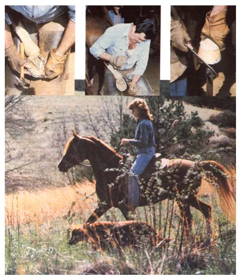
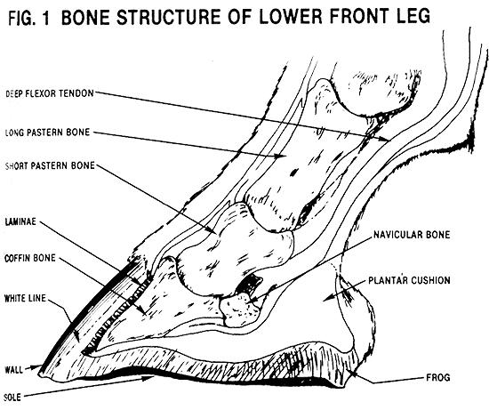
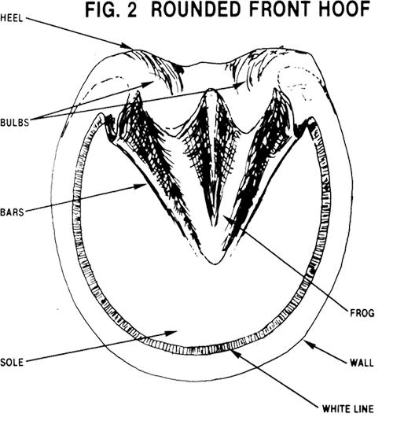

Don't let your healthy mount turn into a lame liability. Keep it sound and happy with...
Horses have always had the most uncanny knack for thoroughly delighting their owners one minute . . . and then turning around and totally perplexing them the next. And small wonder! These highly versatile animals are strong enough to pull a plow through rocky terrain, daring enough to leap over treacherously high fences, and agile enough to lope sure-footedly along a rugged hillside . . . but are also fragile enough to "break down" when you least expect it. Keeping a horse healthy can be a tiresome and costly avocation.
Yet-believe it or not-you can do a lot to prevent many of the common maladies that threaten a horse's soundness, simply by practicing proper hoof care on a daily basis. There are a lot of all-too-sad reasons why the old adage "No foot . . . no horse" is so often heard among horse owners. But you can use preventive health care to turn that gloomy saying into "Sound hoofs make a mighty mount"! The key is this: Don't wait until the last minute-the day you plan to start plowing, enter a show, or set out on a family pack trip to begin catering to the needs of your critter's "toes". By then, it may be too late. No sir, if you've got a palfrey or workhorse around your farm that you care about, then you'd better start getting its feet in shape today.
But whoa . . . hold onto your hoof pick a minute! Before you can take proper care of an equine foot, you've first got to understand a few things about what a hoof is and how it works. Then you have to know what's involved in shoeing and trimming this foot so you can hire a good farrier to work with you. And finally, you should be able to recognize (and deal with) common hoof problems. To help you out, we've done our best to compile and condense this information. So ride on (oops! . . . we meant read on) and then start practicing the art of toe-tending.
A horse's hoof is packed with some of the finest shock-absorbing equipment that nature has to offer, and-when all of its parts are in working order-is truly an amazing structure. For example, a single hoof under the stress of a gallop can bear 5,000 pounds (or more) of pressure without once disturbing the delicate ligaments, muscles, and bones of the leg.
To get a better idea of the physiology of the hoof, take a look at Fig. 1, which shows the internal makeup of a lower front leg and foot (like parts of the hind leg are similar). As you can see, the long and short pastern bones of the leg move up and down into the foundation of the hoof, or coffin bone. Just behind the lower pastern and the coffin is the extremely fragile navicular bone, which is shielded from impact on hitting the ground by a fibrous fatty mass known as the plantar cushion. The natural line between the two pastern bones and the foundation of the hoof must be maintained, since any disturbance to it (as a result of accident . . . neglect . . . or poor trimming and/or shoeing) can cause varying degrees of injury to the horse.
If you look closely at this drawing, you'll see that there's a narrow band surrounding the coffin bone. This is the white line, which is made up of tiny laminae-both sensitive and insensitive that help "glue" the interior (live) part of the hoof to the exterior (dead) protective wall . . . also called the horn.
Fig. 2 is a view of the bottom of a front hoof (the back feet are similar but more oval in shape). As you can see, the wall circles and guards the slightly concave sole. The bars, which defend the all-important shock-absorbing frog, are merely a continuation of the wall.
A horse's hoof, then, is a delicate union of dead outer matter with living inner bone and tissue . . . all of which work together to form what may be nature's ultimate "running shoe". When a healthy steed touches its hoof down as it takes a step, the frog and wall expand and accept the weight of impact. Then the frog aided by the plantar cushion-acts as a spring to push the foot back into the air for another stride.
About the best way to keep those anatomically complex horse hoofs performing as they should is to have them trimmed and shod regularly-at least every four to six weeks-by a reputable farrier. You'll want to hire someone who knows that horse-shoeing requires not only replacing an old shoe with a new one to protect the foot, but also balancing the hoof and leg according to the natural line of the pastern and coffin bones.
Don't try to save money by shoeing your own horse! Unless you have the necessary expertise, you could hurt the steed (and maybe harm yourself as well). What's more, as you'll see in the accompanying chart, damage caused by improper shoeing may show up later in quite serious health problems. So do yourself and your animal a favor by hiring an experienced, well-qualified blacksmith who's willing to take the time to do the job right. The $25 or so you'll have to pay for a visit will be worth it to have your equine remain sound.
If you're wondering just what qualities are characteristic of a reputable blacksmith, the following list may provide you with useful guidelines.
[1] The fattier arrives at the appointed time and, before beginning work, carefully studies your horse's feet and their way of moving to determine the condition of the wall and the natural line of the legs.
[2] Usually starting with a front leg, the blacksmith removes the old nails and shoe and "reads" the worn footwear in order to figure out which part of the hoof handles the most stress.
[3] Then the fattier trims off the excess wall accordingly with a pair of nippers (a sharp jawed, long-handled cutting tool). Afterward, he or she might remove the ragged edges of the frog. In general, though, the frog and sole are let alone.
[4] Your smith next uses a rasp (a long metal file) to level off the foot and finish up the trimming.
[5] Now, with great care the fattier fits a new shoe to the hoof-not the other way around!-by hammering and filing the shoe to size . . . away from the horse. When the tailor-made fitting is ready, the blacksmith expertly nails it onto the foot, taking care not to prick the sensitive laminae. Then the smith clips off the ends of the nails and bends the 1/4" or so of still-protruding metal toward not into-the wall with a pair of clinchers (a tool specifically designed for this task) to hold the shoe in place. He or she may also lightly rasp the wall so that it rests within the outer edge of the shoe.
[6] Finally, when all four feet are shod, a good fattier once again takes the time to examine them carefully, while the horse is standing still and when it's in motion . . . to be certain that the hoofs are balanced and don't interfere with one another. (NOTE: Some horses are a little gimpy the day after shoeing, but this soreness usually isn't serious and disappears after a light workout. However, if it persists for a couple of days and your mount shows signs of lameness, call your fattier or veterinarian.)
WHAT YOU CAN DO
Once you've got a good blacksmith, you'll want to keep him or her in your employ. On shoeing day, get your horse ready (and worked down, if necessary, so that it will behave), and see that its feet are clean. During the trimming and shoeing, hold and discipline your equine so that the farrier's free to concentrate on the job at hand.
Between visits from the smith, you can help maintain your horse's hoofs by cleaning them out daily with a hoof pick (before and after workouts). When you do this, make sure you get rid of all the muck wedged around the frog, being careful to remove any stones that have become lodged in the sole.
Then, about once a week (and twice weekly in hot, dry weather), it's a good idea to scrub the wall thoroughly with soap and water . . . dry it off' . . . and coat it with a mixture made of 3 parts Hooflex and 1 part neat's-foot oil. This will aid in preserving the natural moisture and flexibility of the horn. And, of course, you should always keep a lookout for disorders that may arise, such as those listed in the accompanying chart. If any occur that you can't handle yourself, call your vet or farrier.
Now all of this may seem expensive and troublesome . . . but good hoof care actually takes only about five minutes a day, plus the monthly visit from the blacksmith. (And, rest assured, the money and time spent in preventing lameness is a bargain, compared to the emotional and financial drain of caring for a chronically unsound mount.) Best of all, the next sunny afternoon that your steed takes you for an exhilarating run through the fields, or your sturdy workhorse pulls in a load of felled trees-thus saving you from having to bulldoze your woodlot to log it-you'll really appreciate those four strong hoofs you've helped to preserve.
|
 STAFF PHOTOS |
 |
 |